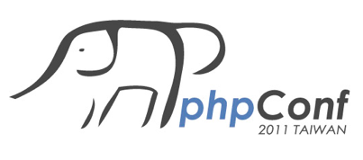

感謝您對「自由軟體鑄造場」的支持與愛護，十多年來「自由軟體鑄造場」受中央研究院支持，並在資訊科學研究所以及資訊科技創新研究中心執行，現已完成階段性的任務。 本網站預計持續維運至 2021年底，網站內容基本上不會再更動。
也紀念我們永遠的朋友 李士傑先生（Shih-Chieh Ilya Li）。
也紀念我們永遠的朋友 李士傑先生（Shih-Chieh Ilya Li）。
Activities  Details - PHPConf Taiwan 2011
Details - PHPConf Taiwan 2011


Activities
PHPConf Taiwan 2011
- When:
- 2011.11.12 09:00 - 16:30
- Where:
- [Taipei] 2nd Conference Room, Humanities and Social Science Building
- Category:
- Conference
- Contact:
- 洪華超 rockhung@citi.sinica.edu.tw
- Tel:
- 27883799#1477, 0912516695

議程簡介
PHP 是一個歷史悠久且廣泛被應用的程式語言，自 1995 年發展至今已經將近 20 年。它具有相當的穩定性以及自由度，在台灣目前是最常被用來寫網站的程式語言。這樣被廣泛使用的程式語言，在台灣卻一直缺乏一個大型的 conference 來讓這些開發者們互相交流。寫 code 的目的是為了創造東西，台灣沒有 PHP Conf、當然也可以自己來創造一個！ 所以就在今年，一群熱血的開發者們發起了這個念頭開始籌辦！所以，非常歡迎各位同好踴躍來參加 PHP Conf TW 2011！
| 時間 | 議程 | 講者 |
|---|---|---|
| 09:00-09:30 | 報到 | |
| 09:30-09:40 | 開場 | 林錦賜（pct） 高見龍（eddie） 林珈宏 （legist / 強哥） |
| 09:40-09:50 | 4money 簡介 -
|
林錦賜（pct） |
| 09:50-10:20 | CSS / SASS / Compass | 陳世偉 （Cain Chen） |
| 10:20-10:40 | CoffeeScript - A Better Way to Write Your Javascript. | 高見龍（Eddie） |
| 10:40-10:50 | 休息 | |
| 10:50-11:20 | Symfony 簡介 -
Symfony 如何協助你快速開發 IDE 開發工具整合 |
Ricky Su |
| 11:20-11:50 | 網站開發須注意的程式碼授權問題 | 林珈宏 （legist / 強哥） |
| 11:50-11:55 | 盟主視訊喊話 - 跨國 PHP Conf | 江明宗（kiang） |
| 11:55-12:55 | 午餐 | |
| 12:55-13:25 | 快速上手 CodeIgniter | 吳柏毅 （appleboy） |
| 13:25-13:55 | Accelerating or Complicating PHP execution by LLVM Compiler Infrastructure | 黃敬群（jserv） |
| 13:55-14:05 | 休息 | |
| 14:05-14:45 | 用 PHP Unit 協助網站開發與重構 -
重構時期的測試 維護時期的測試 |
朱建志（jaceju） |
| 14:45-15:15 | ERP by PHP 設計經驗分享與作品 DEMO | 周益良（judas） |
| 15:15-15:45 | Enterprise PHP - PHP 企業級的應用及挑戰 | 曾義峰（ant） |
| 15:45-16:05 | Joomla! & Joomla! Framework Joomla! 1.7 與未來的 Joomla! Framework |
Eddy Chang |
| 16:05-16:30 | 會後交流 |
講者簡介

林錦賜（pct）
目前為四點設計有限公司的經理，每天都在寫程式，常常跟一些熱愛寫程式的朋友們一起聚會、分享所學。 大學時初識 FreeBSD 而內心悸動不已，希望可以幫 FreeBSD 做點事而改行寫程式。目標：改變世界，或至少改變自己的人生。- 主要專長：Web Development。
- 部 落 格︰https://dd.deep.tw/。
- AboutMe︰linpct。

陳世偉（hinablue）
現於 UGA digital 擔任 Web Developer 的工作。- 主要專長：CSS, HTML。
- AboutMe︰hinablue。

高見龍（eddie）
- 高思數位網路公司經理。
- Adobe Certificated Developer。
- PTT Flash 版版主 (2007年4月迄今)。
- 目前每個月在台北定期舉辦 Flash/AS 聚會。
- Flash/AS3 及 Ruby/Rails 是目前主要謀生的工具。
- 愛現，經常於各種技術相關聚會場合中分享工作或學習心得。
- 不定期受聘於公開或企業內部的教育訓練。
- 主要專長：Flash / ActionScript、Ruby / Rails。
- 部 落 格︰https://blog.eddie.com.tw/。
- AboutMe︰eddiekao。

Ricky Su（ricky）
現於 DCView 數位視野擔任資深工程師。在某個因緣際會的情形下嘗試著用 Symfony 寫了一個小型的報名系統，便逐步的踏入 Symfony 的世界。開發 YOMO pets 寵物誌時，便決定採用 Symfony ，共花了六個月的時間完成，大大縮短了開發時間。- 主要專長：Symfony Framework。
- 部 落 格︰https://ricky.ez2.us/。

林珈宏（legist / 強哥）
現於 OSSF 擔任法政研究的工作。學歷背景為法律與經濟，對於資訊、網路及創新創業領域素有興趣，愛好音樂及歌唱。經常在獲取新知、學思論辯與腦力激盪的過程中得到很大的快樂。- 主要專長：自由軟體法律授權條款分析暨軟體授權策略研擬。
- 部 落 格︰https://legist-says.blogspot.com/。
- AboutMe︰linjiahong。

江明宗（kiang）
就這間電腦工作室負責人。目前為台灣 PHP 聯盟站長之一 。- 主要專長：PHP 程式開發、PHP 應用導入。
- 部 落 格︰https://olc.tw/。

吳柏毅（appleboy）
目前擔任 Sencha Touch 手機網頁及嵌入式系統 Android Linux Kernel 開發整合軟體工程師。 在 2009 年第一次接觸 CodeIgniter PHP Framework 時，就覺得怎麼會這麼容易上手，完全是懶人框架，就此開始擔任台灣繁體中文化網站站長一職，也著手開始翻譯線上教學文件。目前從事的 Open Source 項目有：- CodeIgniter 繁體中文官方網站開發與維護。
- PHP - CodeIgniter - Framework - Taiwan 繁體中文翻譯計畫。
- A Plurk API Implementation with PHP。
- CodeIgniter Plurk API。
- CodeIgniter Google URL Shortener API。
- FreeBSD ports committer, maintainer of several FreeBSD Ports。
- 主要專長：Web development、Linux FreeBSD 伺服器架設。
- 部 落 格︰https://blog.wu-boy.com/。
- AboutMe︰appleboy。

黃敬群（Jserv）
Jim Huang（黃敬群），慣用網路暱稱為「jserv」，是個熱血工讀生。自 1999 年開始對自由軟體發展作貢獻，於 2005 年起提供以自由軟體為基礎的技術資訊服務，涉及手機、GPS導航、數位電視、電子廣告系統、機器人等嵌入式系統設計。基於對電腦技術與自由軟體的熱愛，於 2009 年與同好共同創立 0xlab，期許能以團隊的優勢提供完整戰力，為軟體界做出些許貢獻。- 主要專長：Embedded、VM、Dynamic Translator。
- 部 落 格︰https://blog.linux.org.tw/~jserv/。
- AboutMe︰jserv。

朱建志（jaceju）
現任電週文化網站開發部的技術經理，著有 PHP Smarty 樣版引擎一書。是一個喜歡 PHP 及其他網站開發技術的程式工作者，並沈迷在這個世界裡，進而去探索這些技術有趣的地方。分享技術的理念是︰取之於網路、回饋於網路，並且讓大家能感受到自己學習到新東西的快樂。- 主要專長：Web Development。
- 部 落 格︰https://www.jaceju.net/blog/。

周益良（judas）
現任職於德士資訊。- 主要專長：簡易 Linux 安裝、PHP、ERP 規劃與設計。

曾義峰（ant）
目前專注於自由軟體授權分析與資訊安全研究領域。閒暇時投入自由軟體的開發與研究，每有會意，便欣然忘食。對於「經濟學」、「混沌複雜科學」亦有喜好。平時愛胡思亂想、天馬行空，但總能將夢想轉化為事實。- 主要專長：Coding（PHP and etc.）、Computer security、Open source license。
- 部落格︰https://antbsd.twbbs.org/~ant/wordpress/。
- AboutMe︰yftzeng。

Eddy Chang（eddy）
現為 Joomla! 台灣站長、軟體自由協會理事，最近工作為 Joomla! 系統相關課程教育訓練。- 主要專長：Joomla!、PHP、JavaScript。
- 部 落 格︰https://eddychang.blogspot.com/。
注意事項
- 報到時請記得索取活動名牌，憑證入場。
- 會場內嚴禁攜帶飲料、食物入內，敬請配合。
- 會場提供網路孔，請自行攜帶網路線。如需要使用無線網路，請使用 SSID︰PHPCONF。
- 會場內可以用 USB 連接線連接手機使用 3G 網路。但不可以使用 WIFI 分享 3G 網路服務。
- 報名時請務必填寫 正確 可以聯絡到您的 E-Mail 以利候補作業及活動變動等通知。
- 本活動由於座位有限，若您報名後因故不克前來參加，請您務必於活動前三天到此取消報名！
- 您的報名資料將只用於本次及未來的活動宣傳及問卷，不會傳遞給任何第三者。
- 主辦單位保留更改活動內容及相關事項之權利。
講者簡介
曾義峰
https://about.me/yftzeng 目前專注於「合法的安全程式設計」。閒暇時投入自由/開放源碼軟體的開發與研究，每有會意，便欣然忘食。對於「經濟學」、「混沌複雜科學」亦有喜好。平時愛胡思亂想、天馬行空，但總努力將夢想轉化為現實。- 主要專長：自由/開放源碼軟體授權分析(GPL/LGPL/AGPL/MPL/Apache/EPL/BSD/MIT等)、自由/開放源碼軟體攫取性(感染性)分析、自由/開放源碼軟體授權開發模式導入 CMMI 等軟體工程之應用、Android/MeeGo/Symbian 等開放平台之授權分析、公司利基與自由軟體商業運用模式之研究與分析、FOSSology 等自動化軟體授權分析工具之導入 Keywords: GPL, LGPL, Apache, MPL, EPL, AGPL, EPL, 自由軟體授權, 網路安全, 電腦安全, 身份認證, 交易安全, Botnet殭屍網路, Man in the browser, Boy in the browser
- 部落格：https://blog.gcos.me
吳柏毅
My Profile: https://blog.wu-boy.com/about/- 主要專長：PHP, MySQL, CodeIgniter Framework, FreeBSD, Linux(Ubuntu,Fedora,CentOS),HTML, CSS, JavaScript (Ajax：jQuery)
- 部落格：Appleboy Blog
高見龍
https://www.facebook.com/eddiekao https://www.plurk.com/aquarianboy- 主要專長：Objective-C/iOS app development, Ruby/Rails, Python/Django, Flash/ActionScript...etc
- 部落格：www.eddie.com.tw
kiang
***************************************** Finjon Kiang / 江明宗 Just This Computer Studio / 就這間電腦工作室 Website: https://olc.tw *****************************************- 主要專長：-.-||
- 部落格：就這間電腦工作室
林旅強
林旅強 (Richard) (原名：林珈宏)，任職於中研院資創中心 自由軟體鑄造場，負責： * 自由軟體法律授權條款分析暨軟體授權策略研擬 * 自由軟體校園推廣 * 自由軟體社群經營- 主要專長：自由開源授權及商業利用、創用CC公眾授權條款 (Creative Commons)、開放資料 (Open Data) 政策。
- 部落格：legist-says 李吉思特曰
LinDaniel
- 主要專長：
議程簡介
PHP 是一個歷史悠久且廣泛被應用的程式語言，自 1995 年發展至今已經將近 20 年。它具有相當的穩定性以及自由度，在台灣目前是最常被用來寫網站的程式語言。這樣被廣泛使用的程式語言，在台灣卻一直缺乏一個大型的 conference 來讓這些開發者們互相交流。寫 code 的目的是為了創造東西，台灣沒有 PHP Conf、當然也可以自己來創造一個！ 所以就在今年，一群熱血的開發者們發起了這個念頭開始籌辦！所以，非常歡迎各位同好踴躍來參加 PHP Conf TW 2011！
| 時間 | 議程 | 講者 |
|---|---|---|
| 09:00-09:30 | 報到 | |
| 09:30-09:40 | 開場 | 林錦賜（pct） 高見龍（eddie） 林珈宏 （legist / 強哥） |
| 09:40-09:50 | 4money 簡介 -
|
林錦賜（pct） |
| 09:50-10:20 | CSS / SASS / Compass | 陳世偉 （Cain Chen） |
| 10:20-10:40 | CoffeeScript - A Better Way to Write Your Javascript. | 高見龍（Eddie） |
| 10:40-10:50 | 休息 | |
| 10:50-11:20 | Symfony 簡介 -
Symfony 如何協助你快速開發 IDE 開發工具整合 |
Ricky Su |
| 11:20-11:50 | 網站開發須注意的程式碼授權問題 | 林珈宏 （legist / 強哥） |
| 11:50-11:55 | 盟主視訊喊話 - 跨國 PHP Conf | 江明宗（kiang） |
| 11:55-12:55 | 午餐 | |
| 12:55-13:25 | 快速上手 CodeIgniter | 吳柏毅 （appleboy） |
| 13:25-13:55 | Accelerating or Complicating PHP execution by LLVM Compiler Infrastructure | 黃敬群（jserv） |
| 13:55-14:05 | 休息 | |
| 14:05-14:45 | 用 PHP Unit 協助網站開發與重構 -
重構時期的測試 維護時期的測試 |
朱建志（jaceju） |
| 14:45-15:15 | ERP by PHP 設計經驗分享與作品 DEMO | 周益良（judas） |
| 15:15-15:45 | Enterprise PHP - PHP 企業級的應用及挑戰 | 曾義峰（ant） |
| 15:45-16:05 | Joomla! & Joomla! Framework Joomla! 1.7 與未來的 Joomla! Framework |
Eddy Chang |
| 16:05-16:30 | 會後交流 |
講者簡介
林錦賜（pct）
目前為四點設計有限公司的經理，每天都在寫程式，常常跟一些熱愛寫程式的朋友們一起聚會、分享所學。 大學時初識 FreeBSD 而內心悸動不已，希望可以幫 FreeBSD 做點事而改行寫程式。目標：改變世界，或至少改變自己的人生。- 主要專長：Web Development。
- 部 落 格︰https://dd.deep.tw/。
- AboutMe︰linpct。
陳世偉（hinablue）
現於 UGA digital 擔任 Web Developer 的工作。- 主要專長：CSS, HTML。
- AboutMe︰hinablue。
高見龍（eddie）
- 高思數位網路公司經理。
- Adobe Certificated Developer。
- PTT Flash 版版主 (2007年4月迄今)。
- 目前每個月在台北定期舉辦 Flash/AS 聚會。
- Flash/AS3 及 Ruby/Rails 是目前主要謀生的工具。
- 愛現，經常於各種技術相關聚會場合中分享工作或學習心得。
- 不定期受聘於公開或企業內部的教育訓練。
- 主要專長：Flash / ActionScript、Ruby / Rails。
- 部 落 格︰https://blog.eddie.com.tw/。
- AboutMe︰eddiekao。
Ricky Su（ricky）
現於 DCView 數位視野擔任資深工程師。在某個因緣際會的情形下嘗試著用 Symfony 寫了一個小型的報名系統，便逐步的踏入 Symfony 的世界。開發 YOMO pets 寵物誌時，便決定採用 Symfony ，共花了六個月的時間完成，大大縮短了開發時間。- 主要專長：Symfony Framework。
- 部 落 格︰https://ricky.ez2.us/。
林珈宏（legist / 強哥）
現於 OSSF 擔任法政研究的工作。學歷背景為法律與經濟，對於資訊、網路及創新創業領域素有興趣，愛好音樂及歌唱。經常在獲取新知、學思論辯與腦力激盪的過程中得到很大的快樂。- 主要專長：自由軟體法律授權條款分析暨軟體授權策略研擬。
- 部 落 格︰https://legist-says.blogspot.com/。
- AboutMe︰linjiahong。
江明宗（kiang）
就這間電腦工作室負責人。目前為台灣 PHP 聯盟站長之一 。- 主要專長：PHP 程式開發、PHP 應用導入。
- 部 落 格︰https://olc.tw/。
吳柏毅（appleboy）
目前擔任 Sencha Touch 手機網頁及嵌入式系統 Android Linux Kernel 開發整合軟體工程師。 在 2009 年第一次接觸 CodeIgniter PHP Framework 時，就覺得怎麼會這麼容易上手，完全是懶人框架，就此開始擔任台灣繁體中文化網站站長一職，也著手開始翻譯線上教學文件。目前從事的 Open Source 項目有：- CodeIgniter 繁體中文官方網站開發與維護。
- PHP - CodeIgniter - Framework - Taiwan 繁體中文翻譯計畫。
- A Plurk API Implementation with PHP。
- CodeIgniter Plurk API。
- CodeIgniter Google URL Shortener API。
- FreeBSD ports committer, maintainer of several FreeBSD Ports。
- 主要專長：Web development、Linux FreeBSD 伺服器架設。
- 部 落 格︰https://blog.wu-boy.com/。
- AboutMe︰appleboy。
黃敬群（Jserv）
Jim Huang（黃敬群），慣用網路暱稱為「jserv」，是個熱血工讀生。自 1999 年開始對自由軟體發展作貢獻，於 2005 年起提供以自由軟體為基礎的技術資訊服務，涉及手機、GPS導航、數位電視、電子廣告系統、機器人等嵌入式系統設計。基於對電腦技術與自由軟體的熱愛，於 2009 年與同好共同創立 0xlab，期許能以團隊的優勢提供完整戰力，為軟體界做出些許貢獻。- 主要專長：Embedded、VM、Dynamic Translator。
- 部 落 格︰https://blog.linux.org.tw/~jserv/。
- AboutMe︰jserv。
朱建志（jaceju）
現任電週文化網站開發部的技術經理，著有 PHP Smarty 樣版引擎一書。是一個喜歡 PHP 及其他網站開發技術的程式工作者，並沈迷在這個世界裡，進而去探索這些技術有趣的地方。分享技術的理念是︰取之於網路、回饋於網路，並且讓大家能感受到自己學習到新東西的快樂。- 主要專長：Web Development。
- 部 落 格︰https://www.jaceju.net/blog/。
周益良（judas）
現任職於德士資訊。- 主要專長：簡易 Linux 安裝、PHP、ERP 規劃與設計。
曾義峰（ant）
目前專注於自由軟體授權分析與資訊安全研究領域。閒暇時投入自由軟體的開發與研究，每有會意，便欣然忘食。對於「經濟學」、「混沌複雜科學」亦有喜好。平時愛胡思亂想、天馬行空，但總能將夢想轉化為事實。- 主要專長：Coding（PHP and etc.）、Computer security、Open source license。
- 部落格︰https://antbsd.twbbs.org/~ant/wordpress/。
- AboutMe︰yftzeng。
Eddy Chang（eddy）
現為 Joomla! 台灣站長、軟體自由協會理事，最近工作為 Joomla! 系統相關課程教育訓練。- 主要專長：Joomla!、PHP、JavaScript。
- 部 落 格︰https://eddychang.blogspot.com/。
注意事項
- 報到時請記得索取活動名牌，憑證入場。
- 會場內嚴禁攜帶飲料、食物入內，敬請配合。
- 會場提供網路孔，請自行攜帶網路線。如需要使用無線網路，請使用 SSID︰PHPCONF。
- 會場內可以用 USB 連接線連接手機使用 3G 網路。但不可以使用 WIFI 分享 3G 網路服務。
- 報名時請務必填寫 正確 可以聯絡到您的 E-Mail 以利候補作業及活動變動等通知。
- 本活動由於座位有限，若您報名後因故不克前來參加，請您務必於活動前三天到此取消報名！
- 您的報名資料將只用於本次及未來的活動宣傳及問卷，不會傳遞給任何第三者。
- 主辦單位保留更改活動內容及相關事項之權利。
The registration is closed.
Registered Users:28
Others:85

Open Source Software Foundry‧ Best Viewed with IE7.0 or Firefox2.0 above, 1024x768 Resolution. E-Mail：contact@openfoundry.org
Address：No.128, Sec.2, Academia Rd., Institute of Information Science, Academia Sinica, Nangang District, Taipei City 11529, Taiwan (R.O.C).
Privacy Policy. Terms-of-use
Address：No.128, Sec.2, Academia Rd., Institute of Information Science, Academia Sinica, Nangang District, Taipei City 11529, Taiwan (R.O.C).
Privacy Policy. Terms-of-use